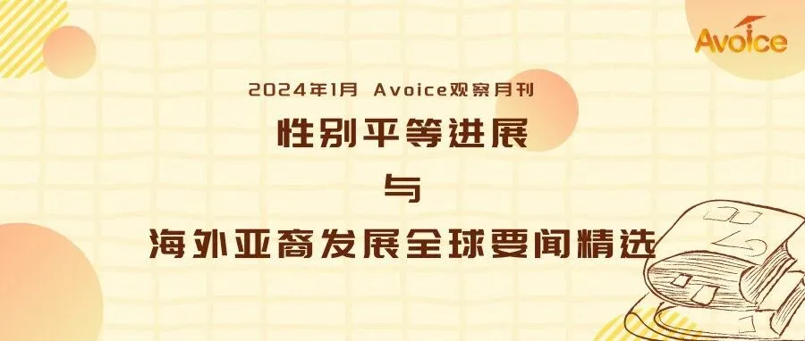

引言：
1月9日，福音派女权主义奠基人，美国作家莱莎·道森·斯坎佐尼（Letha Dawson Scanzoni）因心脏衰竭离世，享年88岁。作为福音派女权主义奠基人之一，莱莎通过她在宗教领域的开创性实践，引领人们走向性别平等之路。
莱莎的学术背景与宗教信仰相交融，成为她挑战传统宗教观念的起点。她不畏权威，多次在具有影响力的神学研究刊物上提出宗教中的女性平等问题以及积极为同性恋基督徒发声。她通过深入研究和富有创见的写作，不仅引领人们反思性别平等问题，也为社会运动注入活力。莱莎的辞世令人痛惜，她的思想遗产将继续鼓励人们为追求性别平等和社会正义的世界而努力。
目录
Table of Contents
一、性别平等
News on Gender Equality
美国基督教女权主义先驱、福音派作家莱莎·道森·斯坎佐尼去世
美国律师、副总统丈夫道格拉斯·埃姆霍夫（Douglas Emhoff）首次出席世界经济论坛年会，讨论性别平等话题
荷兰莱顿大学研究发现，低收入女性高就业参与率与收入不平等趋势缓解相关
二、针对亚裔的犯罪
Crimes against Asian Community
交流项目中国教师在夏威夷街头被泼化学液体，身体严重烧伤，嫌犯已被捕
加州男子家暴谋杀华人妻子，警方疑似在圣克鲁兹山区发现遗体
三、亚裔话语权
Voice of Asian
“华裔喜剧之王”黄阿丽获金球奖与艾美奖，成为首位主角奖亚裔女性获奖者
亚裔家长起诉纽约教育部，称STEM课程项目存在种族歧视
01
性别平等
News
美国基督教女权主义先驱、福音派作家
莱莎·道森·斯坎佐尼去世
1月9日，美国福音派作家莱莎·道森·斯坎佐尼（Letha Dawson Scanzoni）因心脏衰竭逝世于北卡罗来纳州夏洛特市的一家护理院，享年88岁。她是基督教女权主义的奠基人之一，她的作品不仅呼吁人们思考宗教领域性别平等的重要议题，还推动了社会运动发展。
莱莎于1935年出生在匹兹堡，11岁时信奉基督教。她在取得社会学博士学位后，任教于印第安纳大学，专攻宗教研究。她不仅活跃于宗教研究领域，还以积极的写作参与社会运动。她坚信女性不应在宗教事务中被剥夺发言权，也不应无条件地服从于丈夫。她为《永世》（Eternity）杂志供稿，在福音派基督教中挑战传统观念，为社会议题提供了新视角。1974年，她的重要著作《我们的共同使命：用圣经指导女性解放》（All We’re Meant to Be: A Biblical Approach to Women’s Liberation）在现代生活语境下重新解读圣经，成为基督教女权主义的宣言。
1975年，她与同伴成立了“福音派和普世妇女核心小组”（Christian Feminism Today）（现在更名为Christian Feminism Today），致力于社会平等运动。她与神学家弗吉尼亚·雷米·莫伦科特(Virginia Ramey Mollenkott)在1978年发表的另一部重要作品《同性恋能成为我们的邻居吗？》（Is the Homosexual My Neighbor?）中试图通过解释圣经，去除对同性恋基督徒的污名，为他们带来爱和希望，体现了她对社会包容和平等的不懈追求。
莱莎的生平展示了她在宗教和社会领域的积极贡献，她的作品为性别平等的推动起到了重要作用，为后续社会平等运动奠定了重要的思想与行动基础。
消息来源：
Penelope Green.(2024, Jan. 30 ). Letha Dawson Scanzoni, Pioneer of Evangelical Feminism, Dies at 88. The New York Times
https://www.nytimes.com/2024/01/30/us/letha-dawson-scanzoni-dead.html
News
美国律师、副总统丈夫道格拉斯·埃姆霍夫（Douglas Emhoff）首次出席世界经济论坛年会，讨论性别平等话题
1月15日至1月19日，瑞士达沃斯迎来世界经济论坛年会，美国律师、副总统卡玛拉·哈里斯（Kamala Harris）的丈夫，道格拉斯·埃姆霍夫（Douglas Emhoff）首次参与了这一盛会。作为美国首位“第二先生”（the second gentleman），埃姆霍夫在会议中积极参与了多国政府官员和私有部门领导人的研讨，着重讨论打击宗教仇恨、促进性别平等与妇女权益等热点议题。他格外关注性别平等和支持女性领导者的议题，频繁在发言中突出性别差距缩小的紧迫性。抵达瑞士后，埃姆霍夫与女性商会The Female Quotient创始人兼首席执行官雪莉·扎利斯（Shelley Zalis）进行了深入对谈， 强调该组织正积极与其他组织展开合作，为消除职场性别不平等而努力。
消息来源：
Darlene Superville.(2024, Jan. 16 ). Emhoff will discuss antisemitism and gender equity at World Economic Forum meeting in Switzerland. The Associated Press
https://apnews.com/article/emhoff-world-economic-forum-davos-d39190cd6806fe2a2a3d8dcc7419948b
News
荷兰莱顿大学研究发现，低收入女性
高就业参与率与收入不平等趋势缓解相关
在荷兰工会联合会 ( the Federation of Dutch Trade Unions/FNV) 的支持下，荷兰莱顿大学教授埃格伯特·琼恩（Egbert Jongen）和海克-维塔克（Heike Vethaak）进行了一项研究，研究揭示了荷兰家庭收入变化趋势的一些关键发现：尽管过去40年来荷兰的收入不平等增长了12%，但增速相对较缓慢。这种趋势主要归因于低收入女性数量在劳动市场的增加。
研究发现，男性内部收入不平等显著加剧，而由于低收入女性的高劳动参与率，女性内部收入不平等则明显减少。对于低收入群体而言，失业或生病是导致无法就业的主要原因，而这一群体更容易失去永久雇佣合同的保障。与此同时，平均家庭可支配收入增长主要与女性就业参与率和收入提高相关。 在过去40年中，女性就业比例每年增长2%，推动平均家庭可支配收入每年1.1%的增长，而女性收入每年增长3.4%，男性仅为0.3%。然而，在过去20年中，就业女性每周的工作时长增加了0.8%，这也使得女性用于家庭照料的时间和精力相应减少。
消息来源：
Leiden University.(2024, Jan. 18 ). Rising inequality slows as more women in lower-income groups join the labor force, analysis finds. Phys.org
https://phys.org/news/2024-01-inequality-women-income-groups-labor.html
02
针对亚裔的犯罪
News
交流项目中国教师在夏威夷街头被泼
化学液体，身体严重烧伤，嫌犯已被捕
1月23日晚，一位年轻的中国教师在夏威夷檀香山市的阿拉莫阿纳中心附近的人行道上被泼未知化学液体，她的身体大面积严重烧伤，包括脖子和喉咙，目前正在医院接受治疗。当地官员证实，受害者是一名私立学校的中文教师，这是她来美参加国际交流项目的第二年。
在受伤后，受害者立即向附近的一家健身房寻求帮助，工作人员在淋浴间帮她处理了伤口，直到护理人员到达现场。受害者告诉健身房的目击者，她并不认识袭击者也不知道他为何做出该行为。 目击者在接受记者采访时强忍泪水回忆道，“她当时的衣服都烧坏了，整个人呈半裸。她一定感觉很痛苦。”檀香山警方表示，嫌疑人是29岁的塞巴斯蒂安·曼宽 (Sebastian Mahkwan)，袭击发生时，他穿着一件黑色带帽夹克和迷彩裤，步行逃离了现场。后来他被看见时骑着一辆自行车，上身赤裸。
此案被定为二级谋杀未遂，塞巴斯蒂安·曼宽已在25日被捕，以二级谋杀未遂和一级袭击的罪名被起诉，于当地时间周一（29日）首次出庭，但拒不承认犯罪事实。
消息来源：
(2024, Jan. 30 ). 在美遇袭中国公民或永久毁容. CCTV 4
https://mp.weixin.qq.com/s/BfLMiVFjji2OAzbPrbcgPw
(2024, Feb. 9 ). Man pleads not guilty in chemical attack that critically injured woman. Hawaii News Now
https://www.hawaiinewsnow.com/2024/02/09/man-pleads-not-guilty-chemical-attack-that-critically-injured-woman-near-ala-moana-center/
News
加州男子家暴谋杀华人妻子，
警方疑似在圣克鲁兹山区发现遗体
1月16日，加州洛斯加托斯警方宣布，一名涉嫌谋杀40岁华人妻子的56岁男子已被捕，受害者尸体疑似在圣克鲁兹山区中被发现。
此前，警方曾接到受害者Yu YingYing的雇主的报案，称在新年前就无法与她取得联系。1月8日，洛斯加托斯-蒙特塞雷诺警察局开始调查该失踪案。警方表示，他们曾联系她56岁的丈夫耶格尔（John Maxey Yeager），后来发现他提供了错误的信息。在调查中，警方通过邻居家的监控发现Yu曾在新年前夕被耶格尔家暴并试图逃脱，后者在11日因该事件被捕。 13日，警方根据社区提供的信息确认了耶格尔此前曾前往圣克鲁兹山区。调查组在该区域找到了疑似人类遗体，遗体身份需要由圣克拉拉县法医正式确认。
耶格尔目前被关押在圣何塞的拘留所中，他将在3月15日出庭接受初次听证。
消息来源：
Tim Fang.(2024, Jan. 16 ). Los Gatos man accused of wife's murder; body found in Santa Cruz Mountains. CBS News
https://www.cbsnews.com/sanfrancisco/news/los-gatos-man-accused-wife-murder-body-found-santa-cruz-mountains/
Amy Larson.(2024, Feb. 1 ) Los Gatos homicide victim’s escape attempt caught on surveillance camera. KRON 4
https://www.kron4.com/news/bay-area/los-gatos-homicide-victims-escape-attempt-caught-on-surveillance-camera/
03
亚裔话语权
News
“华裔喜剧之王”黄阿丽获金球奖与艾美奖，成为首位主角奖亚裔女性获奖者
在美国当地时间1月7日的金球奖颁奖典礼上，美国身价最高的华裔脱口秀演员，被誉为“华裔喜剧之王”的黄阿丽凭借在《怒呛人生》（Beef）中的出色表演，荣获了第81届金球奖最佳限定剧女主角奖，这也是亚裔演员首次在金球奖中获得限定剧集类表演奖。
Netflix限量剧集《怒呛人生》是一部精彩的喜剧系列，由黄阿丽和韩裔男演员连尚烨（Steven Yeun）主演。二人在剧中饰演两个路怒症事件的参与者，他们原本混乱的生活也变得愈加纠结，一步步陷入了各自的地狱。黄阿丽不仅是该剧的主演，还担任了执行制片人的职务。
黄阿丽的获奖绝对是实至名归，因为她的表演提升了贯穿全剧的独特喜剧风格。对于黄阿丽的表演，《纽约时报》给予高度评价，称其作品是过去一年中最令人振奋、惊叹，最具洞察力的作品之一。
在美国当地时间1月15日晚，第75届艾美奖在洛杉矶孔雀剧院举行，黄阿丽凭借在《怒呛人生》中的出色表现，成功获得限定剧/电视电影最佳女主角奖，成为首位亚裔演员获得艾美奖最佳女主角殊荣的历史性人物。这也是她与连尚烨继金球奖后再度携手荣获最佳男、女主角奖。
消息来源：
Swapnil Dhruv Bose.(2024, Jan. 16 ). Emmys 2024: Ali Wong becomes the first Asian woman with a lead role win. Far Out
https://faroutmagazine.co.uk/emmys-2024-ali-wong-first-asian-woman-lead-role-win/
News
亚裔家长起诉纽约教育部，
称STEM课程项目存在种族歧视
亚裔家长团体近期起诉了纽约州教育部，反对一项名为“科学与技术项目”（Science and Technology Program，简称STEP）的STEM课外项目。他们认为该项目的招生标准，以低收入和“在历史上处于弱势地位”的学生为对象，排除了亚洲和白人学生。
“科学与技术项目”旨在为符合条件的七至十二年级学生提供额外的实验室研究机会、辅导和大学申请指导。项目规定，参加者必须是非裔、西语裔或美洲原住民，或其家庭年收入低于某个具体门槛。诉状写道：“一个西语裔千万富翁的子女有资格申请STEP项目，而一个家庭收入刚达到纽约州低收入水平的亚裔孩子却没有，这仅仅是因为种族。”在2021-2022学年，STEP项目录取了超过12209名学生，大多数（超过10000名学生）是非裔或西语裔。
原告要求法院禁止使用“种族分类”来决定学生是否资格参加该项目，认为这对亚裔和白人学生存在不公平。原告律师、平等保护项目（Equal Protection Project）创始人威廉·雅各布森（William Jacobson）表示：“亚裔和白人学生在申请该项目时往往面临更多的障碍。我们认为这是非法的，教育项目对所有学生应当一视同仁。”然而，来自倡导学校种族融合组织New York Appleseed的执行董事尼亚·伯格（Nyah Berg）认为，此案是对宪法第14修正案中保护少数族裔权利的“歪曲”。她强调，亚裔和白人在STEM领域的占比更高，认为此举可能进一步削弱对受系统性压迫群体的权益的保护。
消息来源：
(2024, Jan. 22 ). 不公平？华人家长起诉纽约州，课外班歧视亚裔和白人. 美加枫情
https://mp.weixin.qq.com/s/4YRf9cVOf0w8IbcneJSpBg
Arya Sundaram.(2024, Jan. 19 ).Asian parents allege racial discrimination in New York’s STEM program. Gothamist
https://gothamist.com/news/asian-parents-allege-racial-discrimination-in-new-yorks-stem-program
* 注：本文所收录的信息仅用于分享交流，不代表Avoice的立场和观点
撰稿 I 李笠箫，王莹 Jacqueline
封面&排版 I 杜婉婷